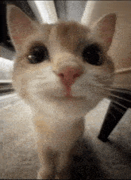

Club de libros
Preguntas frecuentes
Cosas que saber ✨

-
Hay que haber leído el libro para asistir?
No, para nada!
Si bien vamos a discutir los capitulos seleccionados del libro al principio de la reunión, el resto será para hablar de cualquier cosa y socializar 💫
-
Cuándo nos juntamos?
El lugar y horario los acordamos por el grupo. Va a ser en la universidad, a la hora de almuerzo.
Ya que estamos recién iniciando, no tenemos idea si hacerlo un dia especifico.
-
Cuál es el proposito del club?
Pasarla bien, leer, hablar de todo, y hacer amigos.

-
Tienen sala oficial?
No, es un club bastante trucho 🦞 y no estamos asociados a la universidad.
Así que no tenemos cosas como salas oficiales o presupuesto o abogados 😅
Asi que varias reuniones serán en el pastito.
-
Qué tipo de libros van a leer?
De todo: Fantasía, Sci-Fi, Novelas Filosoficas o Romanticas o de Suspenso o Historicas... de todo.
Si tienes alguna recomendación, o libro que quieras leer, avisanos!
-
Cuantas páginas a la semana?
Si bien queremos leer, no queremos que el club sea una carga; queremos leer porque nos gusta, pero no queremos que se convierta en una tarea.
Es por esto, que no se leeran muchas páginas a la semana, ni libros muy largos o densos. Pero eso no importa, porque lo mas importante no son los libros, sino las personas 😁
-
Requiere compromiso?
No!
Asiste o falta cuando quieras.
-
Puedo comer?
Obvio!
Es en la hora de almuerzo; yo, por lo menos, no planeo perder el almuerzo 🍖🥪
-
Código de conducta
Lo usual, respeta a los demas, no hagas cosas raras y trae buenas vibras 😸
-
Donde consigo libros?
Recuerda que la biblioteca presta libros.
Obviamente, también puedes comprarlos o piratearlos.
-
Se pueden proponer actividades además de leer?
Obvio!
Dime tus ideas!
-
Soy timid@ y no me gusta hablar mucho
No te vamos a forzar a hablar, si quieres venir a escuchar, esta bien!